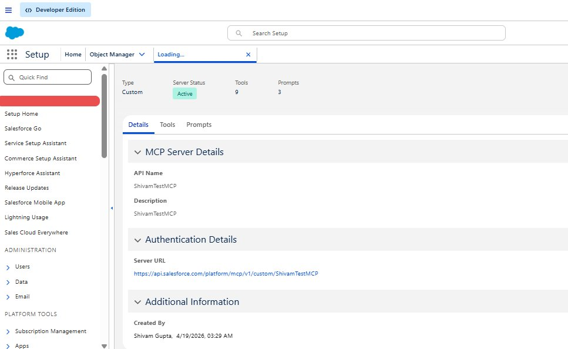
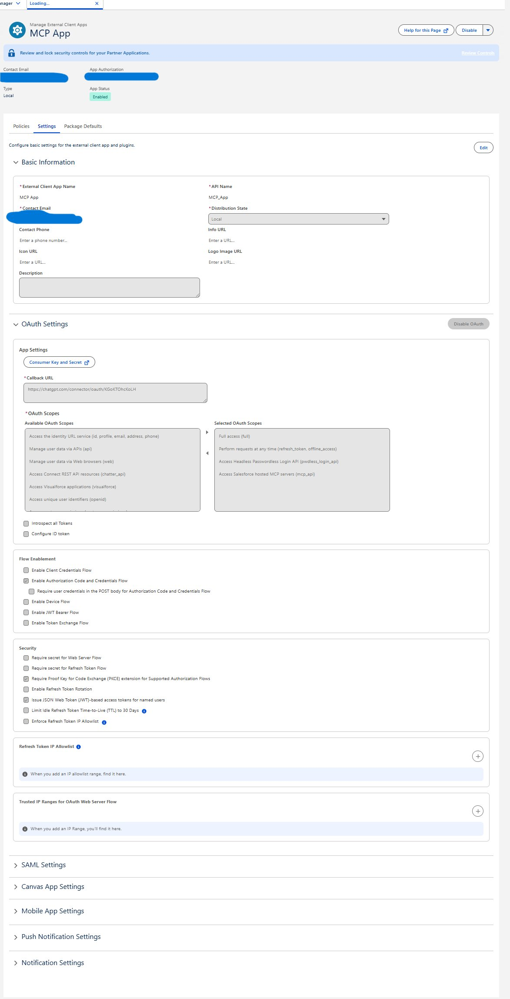
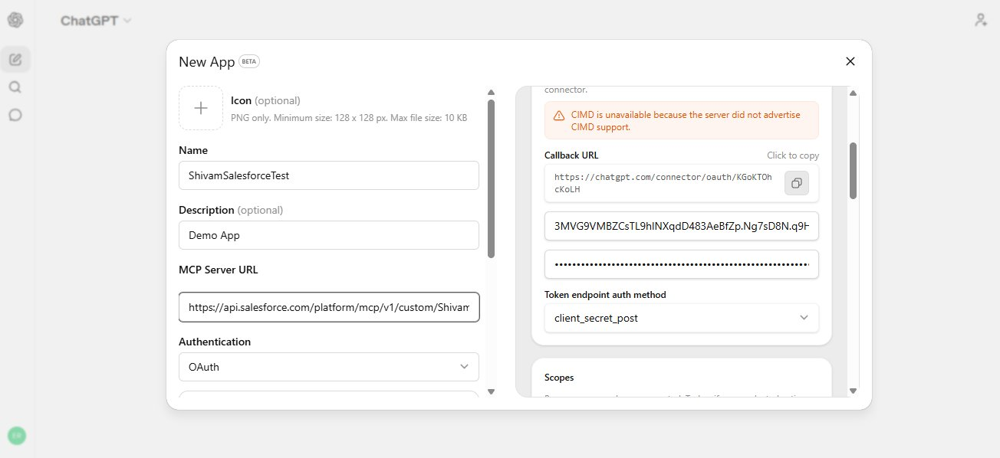
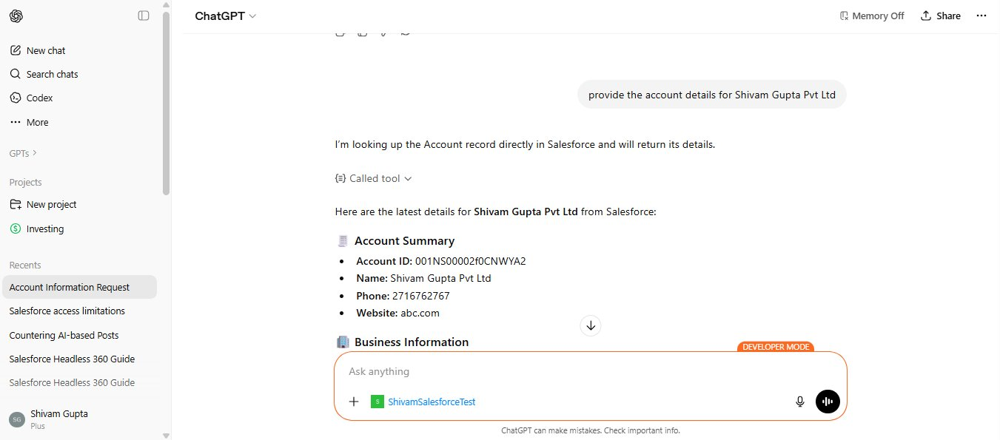
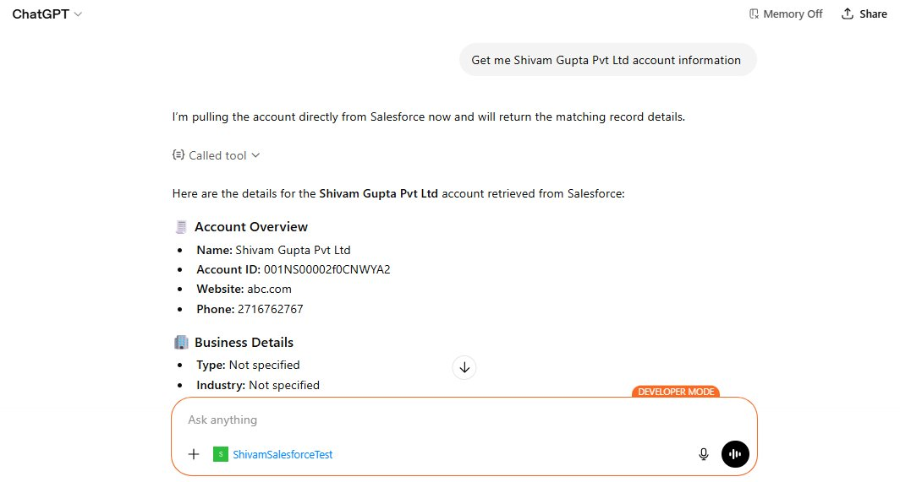
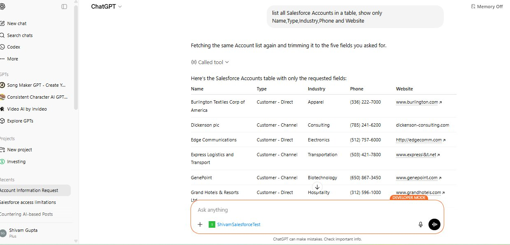
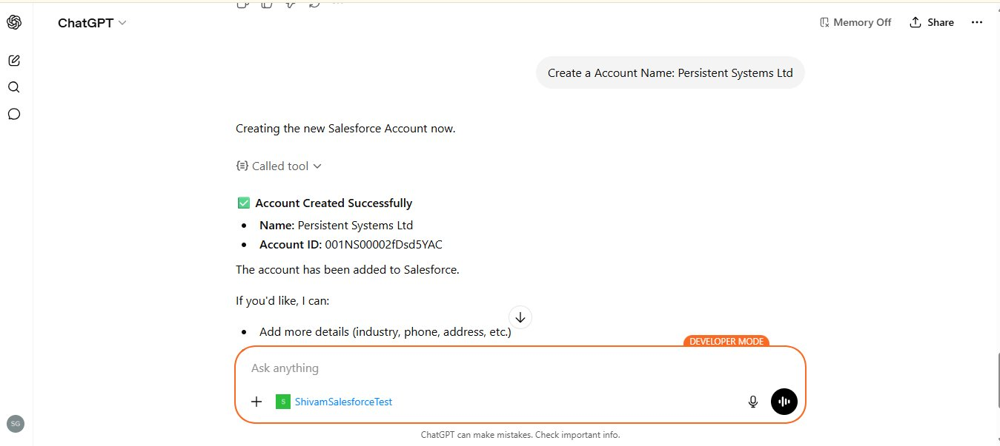

Introduction
Salesforce Hosted MCP Servers make it possible for AI clients like ChatGPT to connect directly to Salesforce through the Model Context Protocol (MCP). Instead of building middleware or a custom API wrapper, you activate a Salesforce-managed server, create an OAuth-enabled External Client App, and point ChatGPT at the server URL. That workflow is now part of the generally available Hosted MCP setup path, so it is worth aligning your configuration to the current GA documentation instead of older beta examples.
The important part is governance. The AI client does not bypass Salesforce security. Tool calls run through Salesforce authentication, object permissions, field-level security, and sharing rules for the user who authorized the connector.
Prerequisites
Before starting, confirm that the following pieces are available.
| Requirement | Details |
|---|---|
| Salesforce org | A Developer Edition, sandbox, scratch org, or production org where Hosted MCP Servers are available, plus administrator access to Setup. |
| External Client App access | You need permission to create an External Client App. Salesforce explicitly documents that Connected Apps are not supported for Hosted MCP client authentication. |
| ChatGPT developer mode | ChatGPT supports MCP servers through developer mode apps/connectors. The UI may refer to this as an app or connector. |
| MCP server choice | Start with the narrowest server that fits the use case. For read-only tests, use platform/sobject-reads. For create/update/delete demos, use a write-capable server such as platform/sobject-all only in a safe org. |
Step 1: Activate MCP Servers
Salesforce SetupMCP servers are disabled by default. An administrator must explicitly activate the required servers before ChatGPT or any other MCP client can connect.
- In Setup, enter MCP Servers in Quick Find, then select MCP Servers under API Catalog.
- Review the available servers and choose the server that matches your pilot use case.
- Toggle on only the servers your team needs.
- Wait up to two minutes for activation to propagate before testing the connection.
For a custom MCP server, the Details tab shows the API name, description, server URL, status, tool count, and prompt count. Copy the server URL because you will paste it into ChatGPT later.

https://api.salesforce.com/platform/mcp/v1/<SERVER-NAME>. Sandbox and scratch org URLs include /sandbox/, for example https://api.salesforce.com/platform/mcp/v1/sandbox/platform/sobject-all. A custom server can appear as custom/ShivamTestMCP.
Step 2: Create an External Client App
Salesforce SetupSalesforce requires an External Client App for Hosted MCP client authentication. The External Client App registers ChatGPT as an OAuth client and issues tokens that ChatGPT uses to call MCP tools on behalf of the authenticated Salesforce user.
- In Setup, enter external client in Quick Find, then select External Client App Manager.
- Click New External Client App.
- Fill in Basic Information, including app name and contact email.
- Expand API (Enable OAuth Settings) and select Enable OAuth.
- Paste the ChatGPT callback URL. You will copy this from ChatGPT Advanced settings while creating the app in Step 3. It looks like
https://chatgpt.com/connector/oauth/<token>. - In OAuth Scopes, include
mcp_apiandrefresh_token. - Under Security, select Issue JSON Web Token (JWT)-based access tokens for named users.
- Select Require Proof Key for Code Exchange (PKCE) extension for Supported Authorization Flows.
- Deselect the other Security options, including client credentials flow and secret requirements for web server or refresh token flows.
- Click Create, then open Settings and copy the consumer key from Consumer Key and Secret.

Step 3: Configure ChatGPT
ChatGPT SettingsChatGPT supports Salesforce Hosted MCP Servers through developer mode apps/connectors. Create a new app and point it at the Salesforce MCP server URL.
- In ChatGPT, go to Settings - Apps - Create App.
- Enter a connector name, for example
ShivamSalesforceTest. - Enter an optional description, such as
Demo App. - In MCP Server URL, paste the Salesforce Hosted MCP Server URL from Step 1.
- Under Authentication, select OAuth.
- Open Advanced settings.
- Set Registration Method to User-defined OAuth client.
- Paste the Salesforce External Client App consumer key into OAuth Client ID.
- Copy the generated ChatGPT Callback URL and add it to the Salesforce External Client App if you have not already done so.
- Click Create.

Step 5: Test the Connection
Live DemoWith the connector active, send focused natural-language prompts and confirm the tool behavior. ChatGPT shows a confirmation card before executing Salesforce tool calls, which gives you visibility into what will be read or changed.
Query a specific account record
Start with a narrow read-only prompt such as provide the account details for Shivam Gupta Pvt Ltd. ChatGPT identifies the right Salesforce MCP tool, asks for confirmation, and retrieves live record data.


List accounts in a table
You can ask ChatGPT to retrieve multiple records and format the result. Specify the exact fields you want to keep the output useful and minimize unnecessary data exposure.

Create a new Salesforce record
If your MCP server includes write tools, such as platform/sobject-all, ChatGPT can also create records. Keep this in a sandbox or tightly governed pilot until the process is proven.

Step 6: Use Prompt Templates
Optional - Prompt BuilderHosted MCP Servers can expose Prompt Builder templates as MCP prompts. This lets ChatGPT use curated Salesforce prompt templates as structured starting points, with CRM data merged by Salesforce before the model responds.
Common prompt template examples include account review briefings and revenue reconciliation analysis.
| Template | API Name | What it does |
|---|---|---|
| Create Executive Briefing for Account Review Meeting | einstein_gpt__accountReviewBriefing |
Generates an executive briefing for an account review meeting by summarizing recent opportunities, cases, and public information about the account. |
| Revenue Reconciliation Analysis | einstein_gpt__revenueReconciliationAnalysis |
Finds discrepancies between financial accounting records and closed deals in Salesforce. |
- Enable Prompt Builder in Salesforce Setup if it is not already enabled.
- In ChatGPT, click the + button in the prompt area and select the Salesforce connector.
- Select the Salesforce prompt template you want to use.
- Enter the required input, such as an account name.
- Add the prompt, review it, and send it.
Best practices
- Start read-only: use
platform/sobject-readsor a narrow custom server for the first pilot. - Use minimum OAuth scopes: include
mcp_apiandrefresh_tokenunless a documented use case requires more. - Activate only what you need: enable only the servers required by the active use case.
- Respect Salesforce permissions: MCP enforcement depends on the connected user's Salesforce permissions, sharing model, and field-level security.
- Prefer custom servers for production: persona-specific tool sets are safer and easier for AI clients to choose from than broad generic tool access.
- Monitor tool usage: track which tools are called, how often, and by which users.
- Keep write actions reviewed: create, update, delete, approval, and send-message actions should require explicit review during rollout.
- Test with Postman first: raw JSON tool responses are easier to debug than an LLM-mediated conversation.